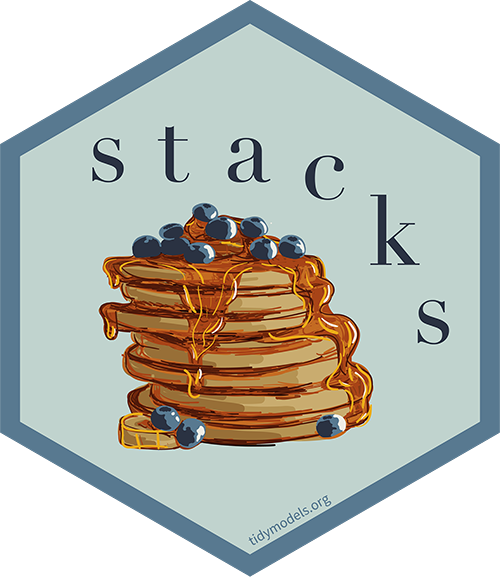
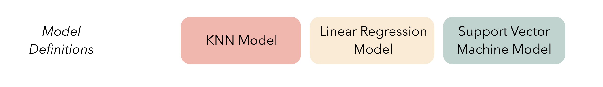
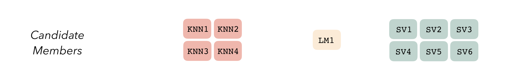
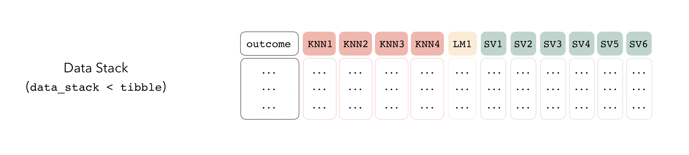
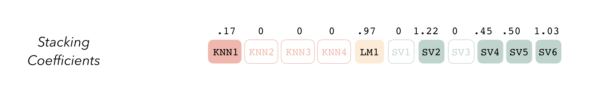
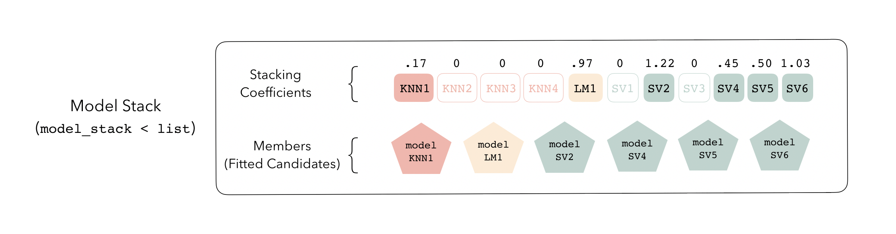

Ensemble Models
Ensemble Models
Let’s stack models together!

Ensemble Models
- Take your output from
tune_gridfor several different model types - “Stack” them together into a single prediction model
- The single model uses Lasso to predict the outcome using the predictions from the other models
- You get a coefficient that you then apply for each candidate model to get a final prediction!
Ensemble Models



Ensemble Models

Ensemble Models

So how do we do it?
- As I mentioned, we can just use our output from
tune_gridwith one tiny addition – we need to tell R that we want to save a bit more information in each of the tuned models so that we can smoosh them all together
Example
library(ISLR)
set.seed(1)
Hitters <- drop_na(Hitters)
cv <- vfold_cv(Hitters)
rec <- recipe(Salary ~ ., data = Hitters) |>
step_dummy(all_nominal_predictors()) |>
step_normalize(all_predictors())
bag_spec <- rand_forest(
mode = "regression",
mtry = ncol(Hitters) - 1,
trees = tune()
)
rf_spec <- rand_forest(
mode = "regression",
mtry = 3,
trees = tune()
)
grid = data.frame(trees = c(10, 50, 100, 1000))
wf_bag <- workflow() |>
add_recipe(rec) |>
add_model(bag_spec)
wf_rf <- wf_bag |>
update_model(rf_spec)
tune_bag <- tune_grid(wf_bag, cv, grid = grid, control = ctrl)
tune_rf <- tune_grid(wf_rf, cv, grid = grid, control = ctrl)Example
Example
library(stacks)
ens <- stacks() |>
add_candidates(tune_bag, name = "bag") |>
add_candidates(tune_rf, name = "rf") |>
blend_predictions() |>
fit_members()
ens# A tibble: 3 × 3
member type weight
<chr> <chr> <dbl>
1 rf_1_4 rand_forest 0.557
2 bag_1_3 rand_forest 0.326
3 rf_1_2 rand_forest 0.167# A tibble: 4 × 3
member trees coef
<chr> <dbl> <dbl>
1 rf_1_1 10 0
2 rf_1_2 50 0.167
3 rf_1_3 100 0
4 rf_1_4 1000 0.557Example
preds <- ens |>
predict(new_data = Hitters, members = TRUE) |>
bind_cols(Hitters |> select(Salary))
preds |>
pivot_longer(cols = -Salary, names_to = "member", values_to = "prediction") |>
group_by(member) |>
rmse(truth = Salary, estimate = prediction)# A tibble: 4 × 4
member .metric .estimator .estimate
<chr> <chr> <chr> <dbl>
1 .pred rmse standard 114.
2 bag_1_3 rmse standard 116.
3 rf_1_2 rmse standard 133.
4 rf_1_4 rmse standard 124.
Dr. Lucy D’Agostino McGowan images from: https://stacks.tidymodels.org/articles/basics.html